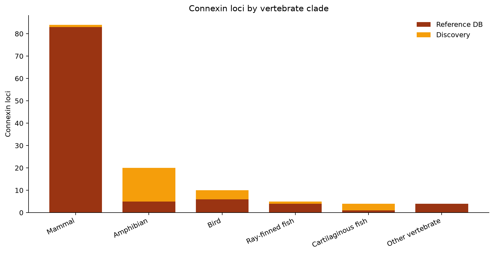
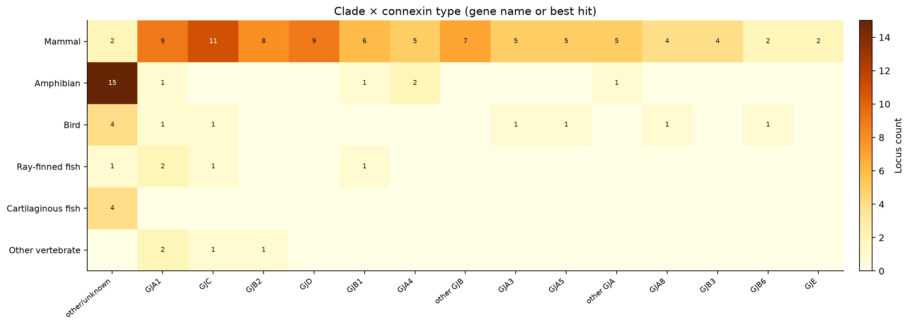
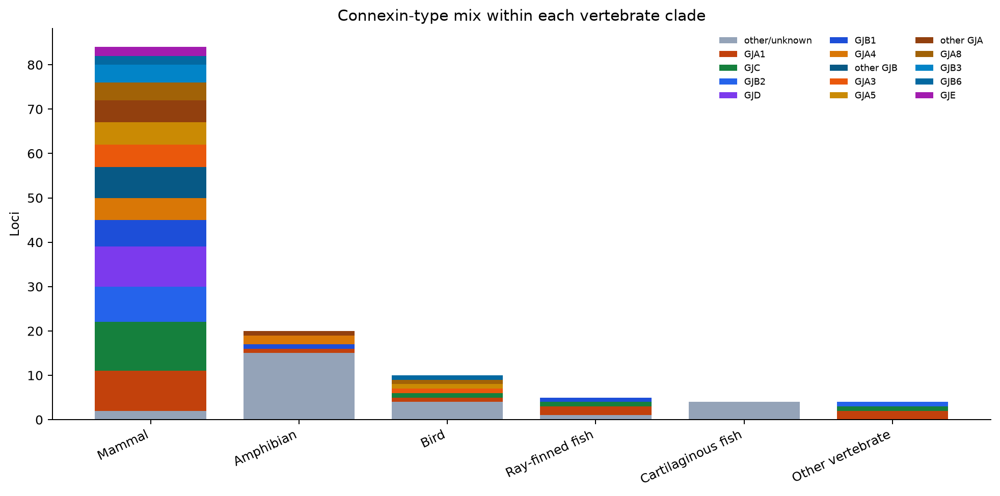
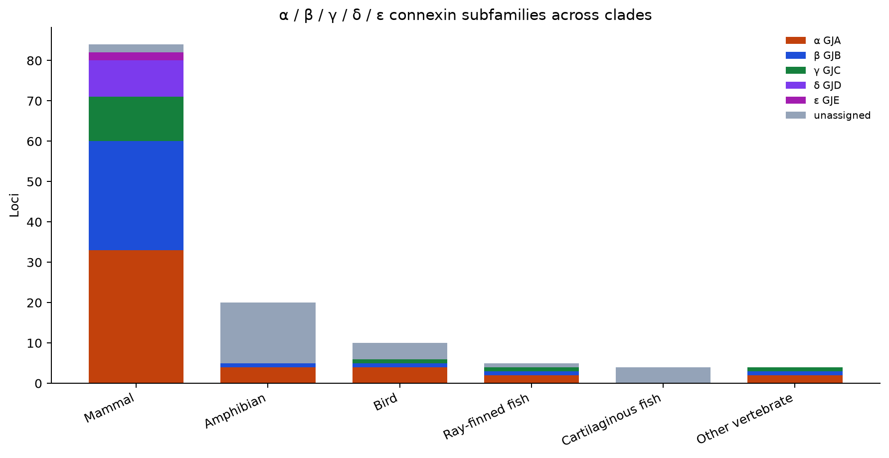
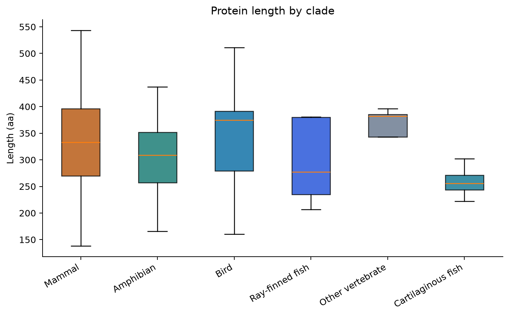
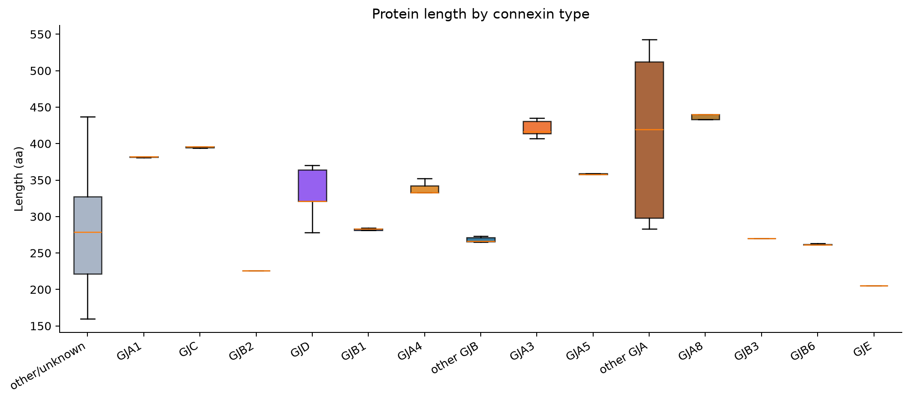
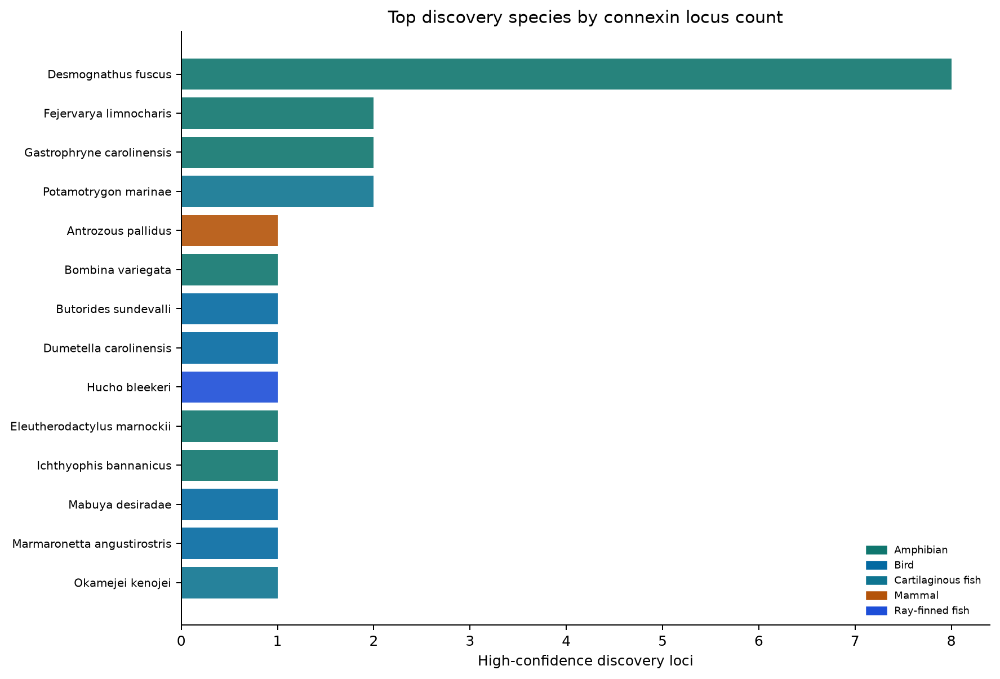
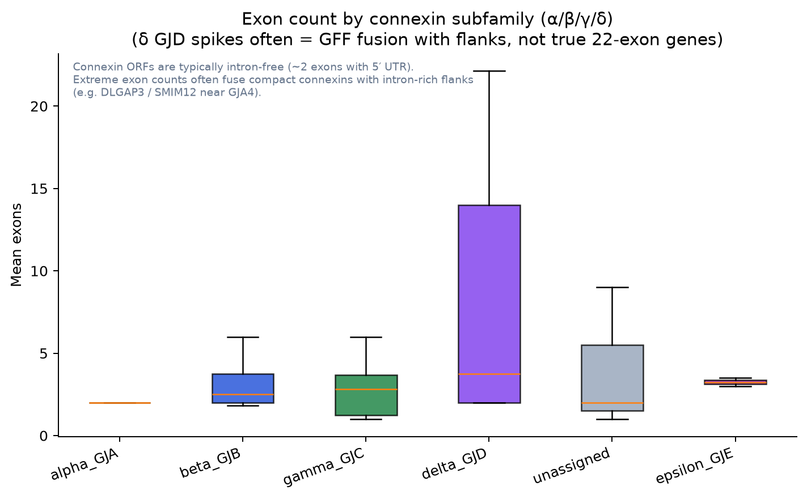

127annotated connexin loci
38species represented
6clade bins
15type labels
Key results
- Dataset: 103 reference connexins + 24 high-confidence discovery loci across 38 species.
- Discovery recoveries most often match other/unknown (23/24). Labels are best-hit similarity, not proven 1:1 orthology.
- α (GJA) and β (GJB) subfamilies co-occur in: Amphibian, Bird, Mammal, Other vertebrate, Ray-finned fish — the dual-locus architecture (GJA1 vs β-cluster) is a vertebrate-wide pattern, not mammal-only.
- Among discovery loci, Amphibian contributes the most (15).
- Median protein length: Mammal 333 aa vs Amphibian 308 aa.
- Median protein length: Bird 375 aa vs Ray-finned fish 277 aa.
- Median protein length: Amphibian 308 aa vs Cartilaginous fish 256 aa.
- Reference set covers α/β/γ/δ/ε classes (GJA, GJB, GJC, GJD, GJE). GJA4 sits in the conserved β-neighborhood; GJA1 is a separate locus.
- Note: δ GJD exon-count outliers (up to ~22) are often automated GFF fusions with intron-rich flanks (e.g. DLGAP3/SMIM12 near GJA4), not real 22-exon connexins.
A discovery locus labelled GJA1-like means its best reference hit was GJA1. Orthology still needs synteny (GJA1 vs the β-cluster around GJA4).
Clade overview
| Clade | Loci | Species | Ref | Discovery |
|---|---|---|---|---|
| Mammal | 84 | 16 | 83 | 1 |
| Amphibian | 20 | 8 | 5 | 15 |
| Bird | 10 | 5 | 6 | 4 |
| Ray-finned fish | 5 | 2 | 4 | 1 |
| Other vertebrate | 4 | 4 | 4 | 0 |
| Cartilaginous fish | 4 | 3 | 1 | 3 |
Connexin labels
| Type | Subfamily | Loci | Clades |
|---|---|---|---|
| other/unknown | unassigned | 26 | 5 |
| GJA1 | alpha_GJA | 15 | 5 |
| GJC | gamma_GJC | 14 | 4 |
| GJB2 | beta_GJB | 9 | 2 |
| GJD | delta_GJD | 9 | 1 |
| GJB1 | beta_GJB | 8 | 3 |
| GJA4 | alpha_GJA | 7 | 2 |
| other GJB | beta_GJB | 7 | 1 |
| GJA3 | alpha_GJA | 6 | 2 |
| GJA5 | alpha_GJA | 6 | 2 |
| other GJA | alpha_GJA | 6 | 2 |
| GJA8 | alpha_GJA | 5 | 2 |
| GJB3 | beta_GJB | 4 | 1 |
| GJB6 | beta_GJB | 3 | 2 |
| GJE | epsilon_GJE | 2 | 1 |
Diagrams

Heatmap: clade × connexin type

Type mix within clades

GJA1/GJA4/GJB… across clades

α/β/γ/δ/ε subfamilies by clade

Protein length by clade

Protein length by connexin type

Top discovery species

Exon architecture by clade

Exons by α/β/γ/δ (δ spikes = annotation fusion)
all loci · clade summary · type summary · MMseqs + embeddings · Curated insights · vs innexin